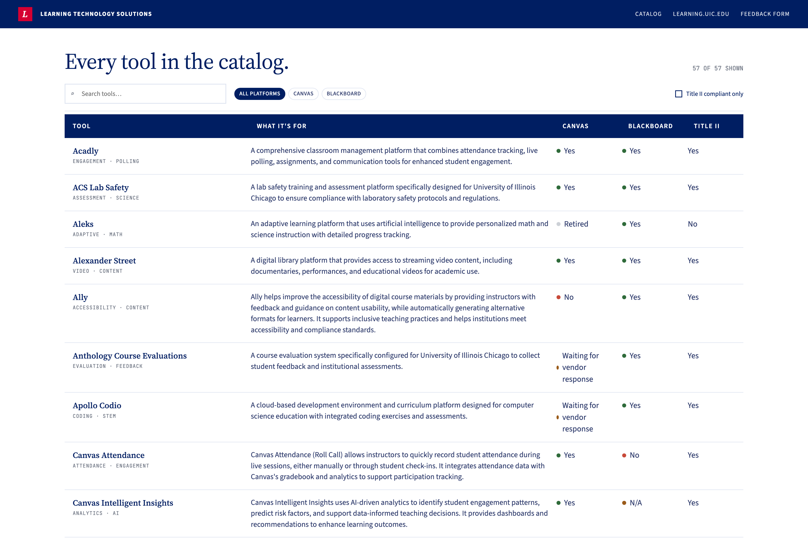
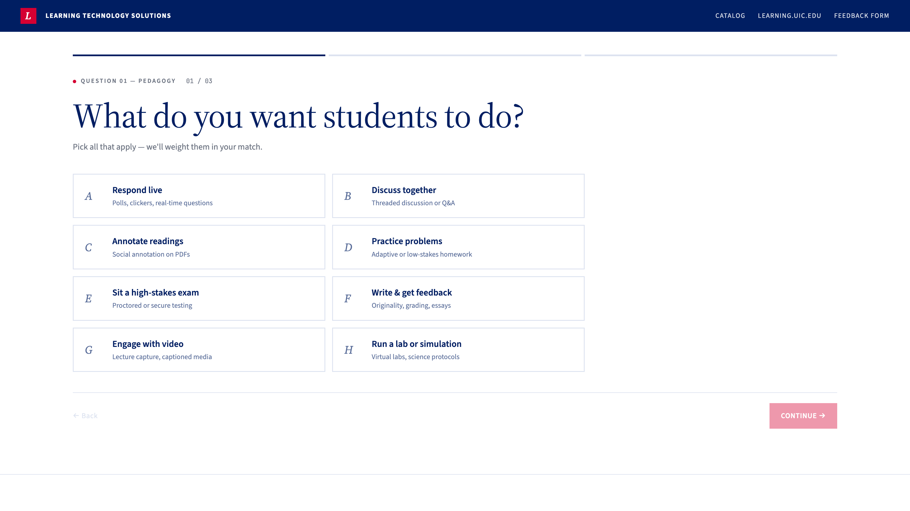
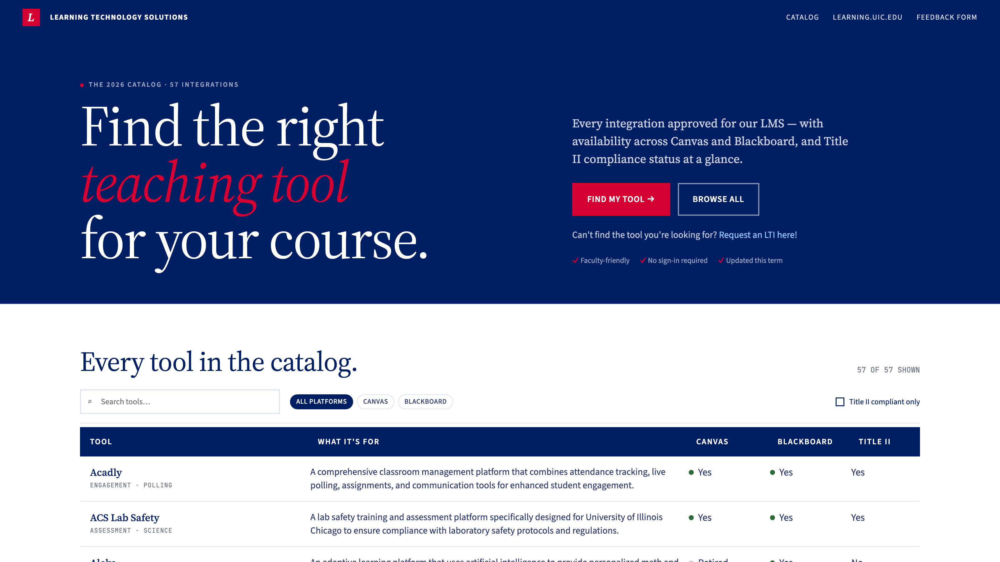

From a Claude Design prototype to a live, faculty-facing catalog.
Project showcase · 2026
The problem
One place for every approved teaching tool.
Faculty needed a single source of truth: which LTI tools are approved, where they work, and whether they meet accessibility rules.
Approved for Canvas & Blackboard
Title II compliance status, at a glance
A guided finder and a browsable catalog
No sign-in, updated each term
The product
What faculty get.
57
Approved tools
2
LMS platforms
10
Walkthrough videos
Find My Tool — a 3-question guided finder that returns a shortlist
Browse all — searchable, filterable catalog table
Canvas & Blackboard availability per tool, plus Title II status
Browse all
Search, filter, and scan availability.

Chapter 1 · Claude Design
It started as a prototype.
The first version was designed in Claude Design — an interactive prototype that defined the look and the flow.
Visual layout and typography
The quiz flow QUESTIONS_FULL
The catalog table structure
Shipped as prototype.jsx
Chapter 2 · Claude Code
Then it was handed to Claude Code.
The prototype was ported to a pure static site — no framework, no build, no dependencies.
Three files: index.html, styles.css, app.js
One source of truth: the LTI_TOOLS array
Deployed on GitHub Pages
The workflow
Built through conversation.
27 small, reviewable commits after the handoff — each one described in plain English, committed, and pushed live in minutes.
“Rename the quiz to Find My Tool” shipped
“Remove the Title II question” shipped
“Make the column headers bigger” shipped
“Match the UIC brand” shipped
Design decisions
The finder got simpler.
It began as a five-question quiz. We cut it to the three questions that actually change the answer.
5 questions → 3 (pedagogy, LMS, discipline)
Title II dropped — now always required
“Take the Quiz” → “Find My Tool”
Removed the % match and the leaderboard

The hard part
Rescuing the video links.
Tool data came from a spreadsheet. Exporting to CSV silently stripped every embedded Panopto hyperlink — only the display text survived.
Parsed the .xlsx directly with Python
Read zipfile → sheet1.xml.rels
Recovered all 10 walkthrough URLs
The finish
Made it look like UIC.
A retheme to match learning.uic.edu — the same navy, cardinal red, and clean white you're looking at right now.
UIC Navy #001E62 hero & header
Cardinal Red #D50032 accents
Navy catalog table headers, white body

By the numbers
The whole build.
28
Commits
3
Source files
0
Dependencies
57
Tools cataloged
10
Videos linked
~2
Work sessions
In production
Live, and easy to keep alive.
The catalog is live on GitHub Pages. Updating it is a one-line change.
Edit the LTI_TOOLS array, then push
GitHub Pages redeploys automatically
PROJECT.md documents the whole system
How it ships
Hosted on GitHub Pages.
The three static files live in a GitHub repository. GitHub Pages serves them straight to the web — no server to run, no build pipeline to configure.
Repo github.com/olgaberezina1/UIC-LTI-Catalog
Live at olgaberezina1.github.io/UIC-LTI-Catalog
Free hosting, HTTPS, custom-domain ready
Every push to main is live in about a minute
Version control
Every change is a commit.
Git recorded every step. Each small change is a labeled commit with a full history you can read, diff, or roll back.
30+ commits, each one reversible
Readable diffs — data lives in one array
The history is the changelog
$git commit -m "Remove all 13 retired tools" $git commit -m "Redesign theme to match UIC brand" $git commit -m "Make 'teaching tool' hero text red" $git push main -> main (live in ~1 min)
AI + version control
Claude runs git directly.
Claude Code doesn't just suggest code — it edits the files, runs git in the terminal, writes the commit message, and pushes. You describe the intent; it does the mechanics.
Edits files, then git add / commit / push
Writes clear, conventional commit messages
Reviews its own diff before pushing
Can branch, revert, and inspect history
You: "make the headers bigger"→edit styles.css→git commit→git push→live
The method
Built with the Superpowers plugin.
An open-source Claude Code plugin of structured skills for real engineering workflows. We used it to shape, plan, and build this deck end-to-end.